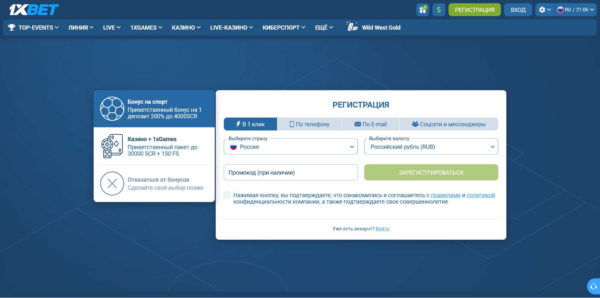

Почему промокод 1xBet не работает и бонус не начислен
Если промокод 1xBet не работает, сначала определите этап ошибки: форма отклонила код, код принят без активации или депозит прошёл без начисления. У этих 3 ситуаций разные проверки. Запишите точное сообщение и сравните свою операцию с правилами конкретного предложения.
Промокод 1xBet не работает: какой код вы вводите
Промокод 1xBet на просмотренном зеркале встречается в 3 разных ролях, и у каждой своя точка ввода. Ошибка часто начинается с того, что код одного типа вводят в поле для другого. Общие правила букмекера (раздел 6.3, снимок от 03.10.2026) прямо разделяют бонусы, подарки и промокоды.
| Тип кода | Где вводится | Что сказано в правилах |
|---|---|---|
| Регистрационный | Поле «Промокод (при наличии)» в форме регистрации. | Способов регистрации 4: в 1 клик, по телефону, по e-mail, через соцсети; поле видно на снимке быстрой регистрации. |
| Подарочный | Раздел «Бонусы и подарки» в учетной записи. | Код приходит через партнёрский сайт или личное сообщение; активация только в основном кошельке. |
| Из витрины | Магазин промокодов, после авторизации. | Код покупают за бонусные средства на сумму не выше их размера. |
Ограничение промокода 1xBet по числу активаций задаёт общий пункт 6.3: каждый промокод может быть ограничен однократным использованием на одного клиента, если явно не указано иное. Повторный ввод уже использованного кода поэтому может закончиться отказом даже при верном написании. Код сайта 1x_546630 относится к первому типу: его вводят в регистрационной форме, а его действие для аккаунта из Москвы на 03.10.2026 не подтверждено.
Промокод 1xBet отклонён при вводе
Отказ формы 1xBet означает лишь то, что промокод не был принят на этом этапе. Формулировка «неверный промокод» сама по себе не доказывает опечатку, истечение срока или недоступность по региону. Для определения причины нужны правила предложения и точное состояние формы.

Форма регистрации 1xBet на снимке от 03.10.2026 над полем кода предлагает выбрать 1 из 4 вариантов: «Бонус на спорт» (приветственный бонус на 1 депозит 200% до 4000 SCR), «Казино + 1xGames» (пакет до 30000 SCR + 150 FS), «Отказаться от бонусов» или «Сделайте свой выбор позже». Суммы показаны в SCR даже при выбранных России и рубле. Вариант «Отказаться от бонусов» по названию исключает приветственное начисление: если вы выбрали его по ошибке, спросите поддержку, можно ли изменить выбор.
- При ошибке промокода 1xBet скопируйте сообщение дословно и зафиксируйте время.
- Сравните написание кода посимвольно, включая латинские и кириллические буквы.
- Проверьте тип кода по таблице выше: регистрационный, подарочный или из витрины.
- Сверьте дату, регион и ограничения промокода в первичных правилах 1xBet.
- Если правила подходят, сохраните скриншот и запросите объяснение через проверенный канал поддержки.
Правила акции 1xBet «200% за первый депозит» в версии от 03.10.2026 не упоминают регистрационный промокод: бонус в ней начисляется автоматически после первого пополнения, если заполнены личные данные и активирован телефон. На главной странице с регистрационным кодом проверьте, что предложение и этап ввода действительно совпадают. Не вводите код повторно бесконечно: это не заменяет выяснение причины отказа.
Код принят, но бонус 1xBet не появился
Принятый промокод 1xBet и начисленный бонус — разные события. Между ними правила могут требовать согласия на участие, заполненного профиля, подходящего пополнения или ожидания обработки операции. Таблица собрана из пунктов, видимых на зеркале 03.10.2026; правила вашей акции могут добавлять свои условия. Для подарков общие правила дают ещё один ориентир: отыгранные средства зачисляются на баланс в течение 24 часов после выполнения требований, если не указано иное.
| Условие | Где записано | Что проверить |
|---|---|---|
| Все поля личных данных заполнены | Общие правила, 6.3 | Профиль без пустых полей. |
| Отмечено «Принимать участие в бонусных акциях» | Общие правила, 6.3 | Настройки личного кабинета. |
| Номер телефона активирован | Акция «200% за первый депозит» | Статус телефона в профиле. |
| Только 1 бонус на клиента, семью, адрес, компьютер, IP | Общие правила, 6.3 | Бонус у другого аккаунта с теми же данными. |
| Промокод активирован в основном кошельке | Общие правила, 6.3 | Кошелёк, где вводился код. |
| Предложение не совмещается с другими акциями | Акция «200% за первый депозит» | Вторая активная акция. |
| Активен только 1 подарок одновременно | Общие правила, 6.3 | Статус остальных подарков. |
| Бонусы отключены для криптовалют | Правила «Магазина промокодов» | Способ пополнения. |
Если сумма есть, но недоступна для ставки, это уже другая задача: проверьте бонусный счёт и ограничения его использования.
Почему не начислили бонус 1xBet после депозита
Начисление после пополнения 1xBet проверяйте со статуса самого платежа. Успешная отправка денег и окончательная обработка операции могут отображаться по-разному. Затем сопоставьте депозит с условиями акции: сумма, время, способ оплаты, валюта, статус аккаунта и порядок участия. Не отправляйте второй платёж до выяснения судьбы первого.
Минимальный депозит в правилах первого пополнения на 03.10.2026 указан как 13,74 SCR, а воспользоваться начислением можно в течение 30 дней со дня регистрации. Начисления за повторное пополнение, по общим правилам, доступны только активным клиентам, которые ежедневно совершают операции в учётной записи. Рублёвые значения этих условий для Москвы снимком не подтверждены.
- название и ссылка на правила акции;
- дата и время ввода промокода и платежа;
- статус операции и её идентификатор;
- скриншот экрана начисления или отсутствия бонуса;
- точный текст сообщения об ошибке, если он есть.
Детали суммы и сроков нельзя брать из старой статьи или нейроответа: они могут относиться к другому региону или версии акции. Начисленную сумму сразу вывести не получится, пока не выполнено требование по отыгрышу.
Как описать проблему службе поддержки
Обращение в поддержку 1xBet должно содержать проверяемую последовательность событий, а не догадку о причине. Укажите название акции, этап отказа, точный текст ошибки, дату и идентификатор операции. Попросите ответ со ссылкой на пункт правил, по которому принято решение. Сохраняйте копию обращения и ответа.
«По акции [название] в [дата и время] я [ввёл код / выполнил депозит]. Операция № [идентификатор] имеет статус [статус]. На экране показано: “[точный текст]”. В правилах акции указан пункт [ссылка или номер]. Прошу указать причину и применённый пункт правил».
Канал связи с 1xBet используйте только официальный, самостоятельно проверенный. Не публикуйте паспорт, полный номер карты, пароль, одноразовый код или реквизиты в комментариях и не присылайте их на bonusbk.xyz. Документы для KYC правила разрешают запрашивать самой компании: по пункту 6.3 без них начисления и выигрыши могут быть аннулированы.
Частые вопросы
Можно ли ввести промокод после регистрации?
Регистрационное поле 1xBet для кода есть только в форме регистрации. Подарочные коды по пункту 6.3 вводятся позже, в разделе «Бонусы и подарки» учётной записи.
Может ли истечь срок действия?
Срок действия в 1xBet задаёт каждая акция: по общим правилам подарок и выигрыши по нему утрачиваются после даты окончания, указанной в учётной записи. Проверьте дату и часовой пояс окончания.
Почему после депозита отображается ноль?
Нулевое начисление в 1xBet возможно на разных этапах: платёж ещё обрабатывается, условия участия не выполнены или начисление показывается отдельно. Проверьте статус платежа и акции прежде, чем делать новый депозит.
Поможет ли другой код?
Новый аккаунт ради другого кода нарушает правило 1xBet об 1 бонусе на клиента, семью и IP-адрес. Если причина связана со сроком или региональным ограничением, новая комбинация не меняет исходные условия.
Метод и ограничения
Диагностическое дерево для промокода 1xBet собрано по SERP-пакету, семантике и вопросам пользователей от 02.10.2026, а условия сверены по публичным страницам зеркала без входа в аккаунт. Форма регистрации снята дважды: в 16:12 UTC с Сейшелами и SCR и в 17:06 UTC с Россией и RUB. 3 октября открыты форма регистрации, общие правила, правила акции «200% за первый депозит» и «Магазина промокодов» на указанном пользователем зеркале.
Сессия на зеркале 1xBet шла без ввода промокодов и без платежей, поэтому реальные системные сообщения не воспроизводились. В открытой сессии по умолчанию стояли Сейшелы и SCR; сообщения и условия для аккаунта из Москвы не проверены. Без правил конкретного кода и скриншотов статья не определяет причину отказа автоматически. Правовой контекст: сообщение ФНС о рисках для пользователей в России.